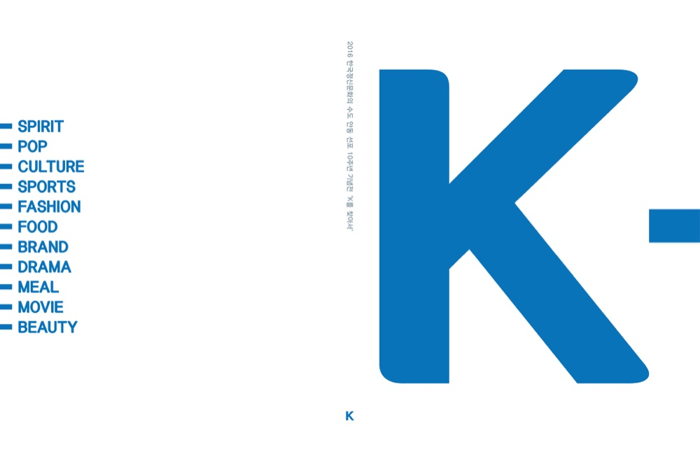
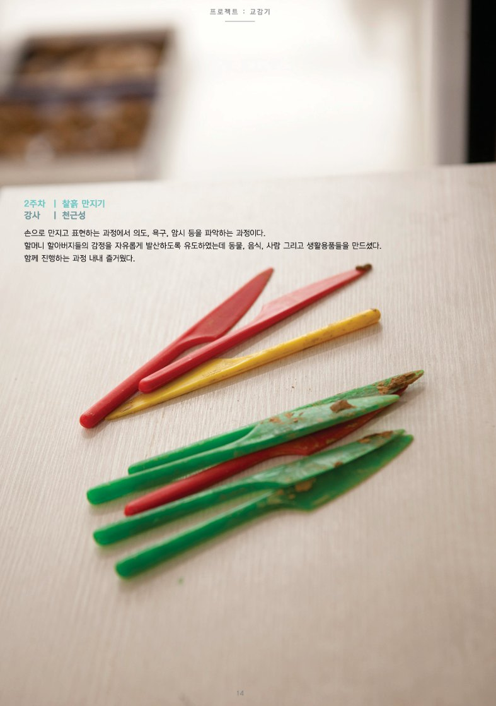
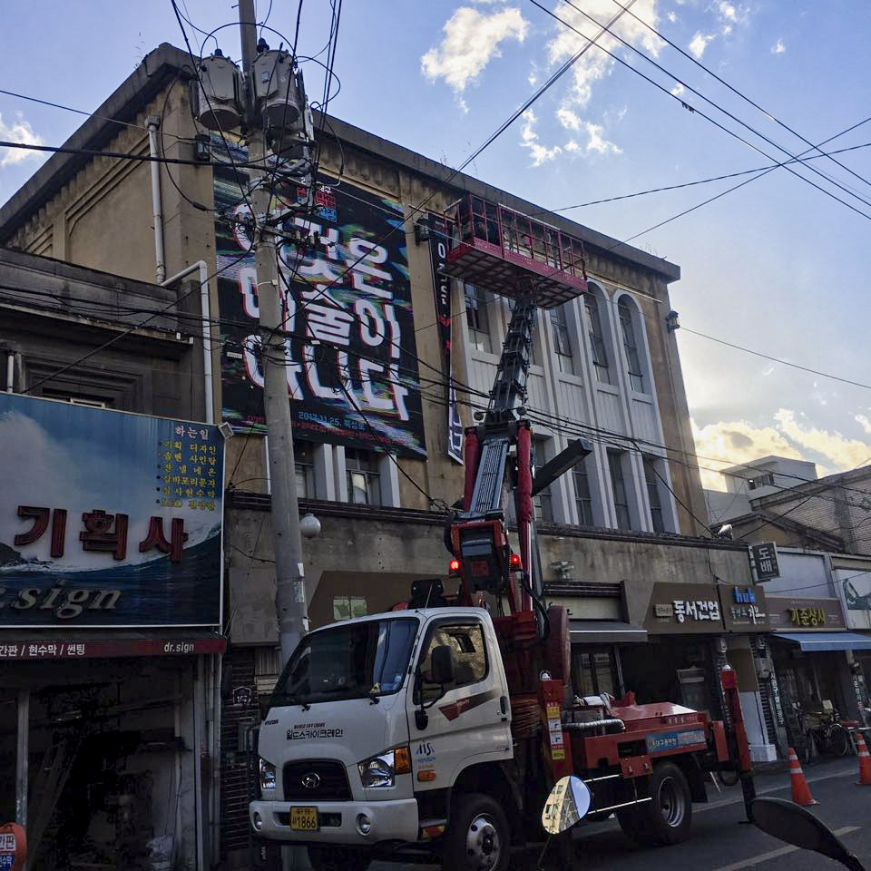
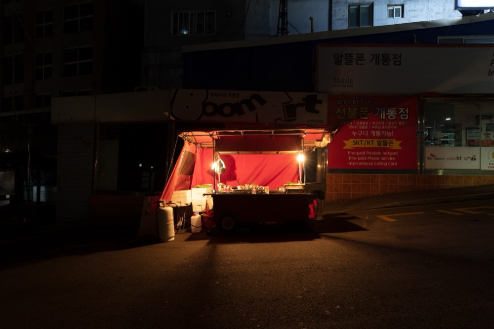
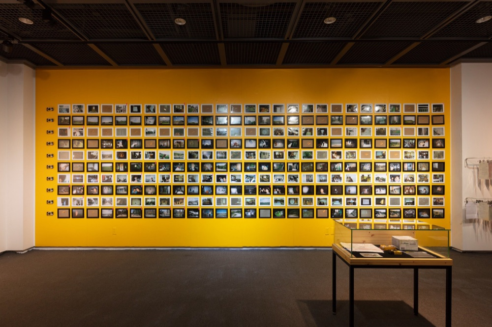
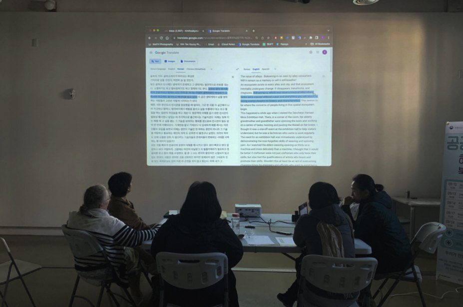
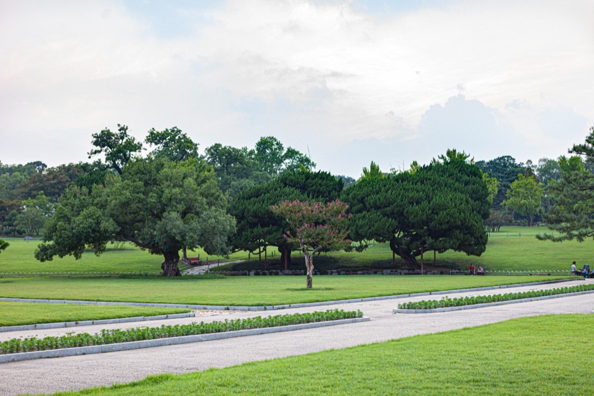

LED
Landscape
LED Methodology
장소 안에서 기록이 다시 쓰이는 방식
우리가 만나는 장소 안에는 경관, 시간, 기억, 제도, 감각이 함께 놓여 있습니다. 그 안에서 이미지는 장면이 되고, 언어는 기록이 되며, 개인의 기억은 다시 함께 볼 수 있는 질문으로 이어집니다.
Local Express라는 이름에는 배달, 전달, 오가는 일, 닿기 어려운 사람과 장소 사이에 통로를 만드는 감각이 담겨 있습니다.
How records find their place again within a site
Every place we encounter holds landscape, time, memory, institutions, and sensation together. Images become scenes, language becomes record, and personal memory opens into questions that can be seen together.
The name Local Express carries the sense of delivery, transmission, movement, and of making a passage between people and places that are difficult to reach.
일상의 기록이
공공의 풍경이
되는 과정
로컬익스프레스대구는 시각예술을 기반으로 장소와 이미지, 기록의 관계를 살핍니다.
우리는 장소와 시간 속에서 발생한 장면과 언어, 기억과 기록이 어떤 자리로 옮겨지는지 천천히 따라갑니다. 참여자의 카메라로 도착한 이미지, 이동을 통해 다시 전해진 기억, 텍스트와 출판으로 정리된 질문, 전시와 아카이브 안에서 배열된 기록은 각기 다른 경로로 장소를 다시 읽게 합니다.
시민의 사진 한 장, 특정한 시간에 도착한 이미지, 오래된 골목의 표면, 전시가 놓인 조건, 동물원의 시간과 도시 재편의 흐름은 서로 다른 기록의 형태를 가집니다. 이 기록들이 함께 놓일 때, 장소를 기억하고 다시 바라보는 감각이 조금씩 생깁니다.
그 감각은 장소와 기억을 옮기고 다시 쓰는 방식으로 이어집니다. 로컬익스프레스대구는 멀어진 기억, 아직 공공의 언어를 얻지 못한 장소, 서로 다른 시간 속에 흩어진 장면들을 감각 가능한 거리로 옮겨 놓습니다.
Methodology
로컬익스프레스대구의 방법론은 2017년 설립 이후의 프로젝트들 속에서 구체화되었습니다.
그 바탕에는 설립 이전부터 이어져 온 장소와 이미지에 대한 감각, 이동과 전달의 방식, 그리고 2015년 대구예술발전소 입주작가 활동을 통해 형성된 작가들과의 협업 경험이 놓여 있습니다.
2015–2016년 〈안녕 배달〉에서 형성된 이동과 전달의 감각, 2016년 안동문화예술의전당 〈K를 찾아서〉에서 다뤄진 장소와 도시 브랜드에 대한 질문은 이후 로컬익스프레스대구의 장소·이미지·공공 기록 방법론으로 이어지는 중요한 선행 장면입니다. 〈K를 찾아서〉는 그 관계의 연장선에서 진행되었고, 안동이라는 장소와 ‘K’라는 문화적 기호가 전통, 관광, 산업, 세계화의 언어 속에서 어떻게 작동하는지를 살폈습니다.

장소, 이미지, 이동, 기록의 초기 층위
2015–2016 〈안녕 배달〉, 2016 〈K를 찾아서〉, 2017년 이후의 실천으로 이어지는 선행 장면
이후 로컬익스프레스대구의 실천은 이러한 감각을 장소 기반 리서치, 공공 기록, 시민 참여, 출판과 담론 생산의 구조로 확장해왔습니다. 장소를 읽고, 이미지를 공공적 질문으로 세우고, 시민의 기억과 사회적 조건을 기록의 구조로 전환하는 일. 이 흐름이 로컬익스프레스대구가 이어가고자 하는 방법론의 중심입니다.
동시대 미술 안에는 작품의 유통과 전시, 시장과 연구, 공공적 실천이 각기 다른 방식으로 작동합니다. 로컬익스프레스대구는 그 가운데 장소와 이미지, 시민의 기억과 공공적 해석이 만나는 지점에서 예술이 어떤 자리를 만들 수 있는지 살핍니다. 그 자리는 빠른 성과나 큰 선언으로 닫히지 않고, 오래 볼 수 있는 기록과 다시 만날 수 있는 장면에 가깝습니다.
장소를
다시 읽는 흐름
〈안녕 배달〉에서 출발한 배달의 감각은 이동하기 어려운 몸과 멀어진 기억 사이에 임시적인 통로를 만드는 일이었습니다. 요양병원 안의 언어와 그림, 기억과 단서는 병원 밖의 장소를 향한 지도가 되었고, 예술가는 그 방향을 따라 이동했습니다. 영상은 그 이동을 다시 전하는 형식이 되었고, 병원 안의 기억과 병원 밖의 장소 사이에 잠시 통로를 만들었습니다.
이 경험은 이후 로컬익스프레스대구가 장소를 바라보는 중요한 기준이 되었습니다. 장소는 주소와 지명, 그리고 누군가의 기억이 계속 향하고 있는 방향을 함께 품습니다. 예술은 그 방향을 따라가며, 사회가 기능적으로 처리한 문제 안에 남겨진 감정과 관계의 층위를 다시 보이게 합니다.

〈안녕 배달〉
찰흙 만지기 / 기억을 꺼내는 과정
2017년 대구 청년미술프로젝트에서 일부 작품과 작가노트를 둘러싼 수정·교체·제외 요구는 예술적 발화가 제도와 공론의 장 안에서 어떤 조건으로 놓이는가를 묻는 계기가 되었습니다.
그 문제의식은 북성로 일대에서 전시, 라운드테이블, 토론, 공연이 함께 열린 문화예술 공론장으로 이어졌습니다.

2017년 이후의 실천
공공적 판이 도시 안에 놓이는 장면
예술의 공공성, 작가의 노동, 표현의 자유, 관객의 신뢰, 행정의 책임, 장소의 윤리, 참여자의 존엄은 서로 연결된 기준입니다. 이 기준들이 함께 자리할 때, 예술은 하나의 사건을 지나 다시 질문하고 기록하고 만날 수 있는 자리를 만듭니다.
신장동과 북성로를 다룬 프로젝트들은 장소의 표면과 그 표면을 만든 조건을 함께 읽는 흐름으로 이어집니다. 신장동은 K-55 오산미군기지, 송탄이라는 역사적 명칭, 기지촌의 시간, 상업과 이동, 도시 재편의 압력이 겹쳐 있는 장소로 열립니다. 북성로는 공구상과 철물점, 도시재생, 오래된 골목과 새로운 보행자의 시간이 겹쳐 있는 장소입니다.

신장동 아카이브
평택 송탄과 K-55 주변의 장소 표면과 도시 조건을 읽는 장소 기반 아카이브
이미지는 장소가 어떻게 형성되고 사용되고 기억되는지를 읽는 기록 장치가 됩니다. 장소 안의 연결을 우선하는 감각은 이 흐름을 설명합니다. 장소 안에 이미 존재했던 관계와 기술, 노동과 기억, 시민의 이동을 다시 연결 가능한 구조로 놓는 일. 공공예술은 이 자리에서 장식과 관계의 재배치를 함께 다루는 실천으로 확장됩니다.
흩어진 장소와
같은 시간을
편집하는 방식
〈정례브리핑 14시, 27일〉은 팬데믹 시기 매일 반복되던 공적 브리핑의 시간을 서로 다른 장소의 일상 기록으로 옮긴 프로젝트입니다.
당시 오후 2시의 정례브리핑은 확진자 수와 방역 지침, 사회적 거리두기의 기준을 전달하는 익숙한 공적 시간이었습니다. 로컬익스프레스대구는 그 시간을 다시 바라보며, 숫자와 지침의 바깥에서 사람들이 어떤 하루를 지나고 있었는지 묻고자 했습니다.
전 세계 60여 곳에서 참여한 사람들은 27컷이 담긴 일회용 카메라를 받았습니다. 참여자에게 주어진 규칙은 단순했습니다. 27일 동안 매일 오후 2시, 각자의 장소에서 한 장의 사진을 남기는 일. 같은 시간, 다른 장소, 제한된 컷 수, 손에 쥐어진 일회용 카메라는 이 프로젝트의 중요한 형식이 되었습니다.
이 프로젝트에서 사진은 완성된 작품 이미지로 닫히지 않고, 서로 다른 장소에서 같은 시간을 통과한 사람들의 안부와 감각으로 도착했습니다. 어떤 사진은 정확히 오후 2시에 찍혔고, 어떤 사진은 그 시간의 주변에서 남겨졌습니다. 어떤 카메라는 늦게 도착했고, 어떤 자료는 회수 중인 상태로 전시의 아카이브 안에 놓였습니다. 도착한 이미지, 함께 적힌 메시지, 지연된 자료, 비어 있는 자리까지 전시의 일부가 되면서, 기록은 발생하고 도착하고 배열되는 과정으로 드러났습니다.
A project that transposed the public time of daily pandemic briefings into everyday records from dispersed places.
The 2 p.m. briefing was a familiar public moment — transmitting case numbers, guidelines, and distancing measures. Local Express Daegu looked beyond the numbers to ask what kind of day people were actually living through.
Participants in over 60 locations around the world received a 27-exposure disposable camera. The rule was simple: one photograph, every day at 2 p.m., for 27 days.
The photographs arrived not as finished works but as traces of how people passed through the same time in different places. Late cameras, delayed materials, and empty slots all became part of the archive — making visible the process by which records are generated, received, and arranged.
전시는 세 개의 섹션으로 구성되었습니다. 첫 번째 섹션은 참여자들이 보낸 이미지와 메시지를 통해 팬데믹 시기의 오후 2시를 다시 배열했고, 이어지는 섹션들은 국내외 작가들이 각자의 방식으로 팬데믹 시기와 그 이후의 시간을 사유하는 장면을 만들었습니다. 회화, 영상, 설치, 커뮤니티 아트의 형식은 같은 시간을 서로 다른 감각으로 다루었습니다.
공적 정보가 매일 전달되던 동안,
각자의 삶은 어떤 모습으로 지속되고 있었는가.

정례브리핑 14시, 27일
전시의 구조와 시간의 배열을 보여주는 참조 이미지
이 질문들은 〈정례브리핑 14시, 27일〉을 서로 다른 장소에서 발생한 삶의 시간을 한자리에 놓는 기록의 구조로 읽게 합니다. 오후 2시라는 규칙은 흩어진 장소들을 연결하는 편집 장치가 되었고, 참여자의 카메라는 각자의 자리에서 발생한 삶의 기록을 전시장으로 옮겼습니다. 이 프로젝트에서 공공 기록은 서로 다른 사람들이 같은 시간을 지나며 남긴 작은 장면들의 배열에 가까워집니다.
공론장이
형성되는 조건을
만드는 방식
PAN Series는 지역에서 작업한다는 것이 무엇인지, 지역성이라는 말이 어떻게 다시 질문될 수 있는지를 다룬 단계형 리서치 프로젝트입니다.
포트폴리오 리뷰, 강연, 워크숍, 전시는 각각의 프로그램이면서 하나의 흐름으로 작동합니다. 리뷰는 작업을 다시 보는 자리이고, 강연은 질문의 언어를 만드는 자리이며, 워크숍은 관계와 토론의 장을 여는 자리입니다. 전시는 그 모든 과정이 축적된 뒤 발생하는 하나의 장면입니다.

PAN Series
포트폴리오 리뷰, 강연, 워크숍, 전시로 이어지는 단계형 리서치의 장면
공론장은 하나의 프로그램으로만 설명되지 않습니다. 누가 질문할 수 있는지, 어떤 언어가 오갈 수 있는지, 비평과 관계가 어떻게 형성되는지, 전시가 어떤 과정 끝에 발생하는지를 함께 살피는 조건에 가깝습니다. 로컬익스프레스대구의 PAN은 그런 판의 가능성을 실험한 흐름입니다.
PAN Series is a research project that asks what it means to work locally, and how the question of locality can be reopened.
Portfolio review, lectures, workshops, and exhibition each function as a program and together as a single flow. Review is a space to look at work again; lectures build a language for questions; workshops open a space for dialogue. The exhibition is the scene that emerges after all of it accumulates.
A public field cannot be explained by a single program. It is closer to a set of conditions — who can ask, what language can circulate, how critique and relationship are formed.
하나의 장소에
흩어진 사람들의
시간을 모으는 방식
달성공원 프로젝트는 로컬익스프레스대구의 방법론이 가장 복합적으로 드러나는 장면입니다.
달성공원은 오래된 성곽의 시간, 공원과 동물원의 시간, 시민의 산책과 유년의 기억, 그리고 동물원 이전과 도시 재편의 흐름이 한 장소 안에 겹쳐 있는 풍경입니다.

달성공원 프로젝트, 2017–present, 대구
시민의 사진과 기억을 통해 하나의 장소에 쌓인 시간을 다시 읽는 장소 기반 장기 기록 프로젝트
달성공원 프로젝트에서 시민의 사진과 기억은 중요한 기록의 입구가 됩니다. 시민의 앨범 속 사진 한 장은 행정 기록이나 공식 역사에 포착되기 어려운 장소의 감각을 품고 있습니다. 누군가에게 달성공원은 어린 시절의 나들이 장소이고, 누군가에게는 동물원이며, 누군가에게는 오래된 성곽과 도시의 기억이 겹친 장소입니다.
이 프로젝트에서 사진 수집은 기록의 입구이자 방법입니다. 중요한 것은 사진의 양과 함께, 사진을 통해 어떤 기억과 장소 감각이 다시 읽히는가입니다. 온라인 접수 양식은 기억을 조심스럽게 맡기는 입구로 기능합니다. 도착한 사진과 이야기는 동의와 확인을 거쳐 천천히 정리되며, 공개는 로컬익스프레스대구의 아카이브 검토와 큐레이션을 통해 이루어집니다.
The Dalseong Park Project is where the methodology of Local Express Daegu appears in its most layered form.
In this project, citizens' photographs and memories serve as an entry point into the record. A single photograph from a personal album holds a sense of place that official histories rarely capture.
Collecting photographs is both an entry point and a method. Photographs and stories are carefully organized once consent is confirmed, and shared through Local Express Daegu’s archival review and curation.
as Public
Record
Everyday Documentation as Public Record.
일상의 기록이 공공의 풍경이 되는 방식.
그 단순한 이동 안에 로컬익스프레스대구가 장소와 이미지, 공공 기록을 다루는 방법론이 있습니다.
That simple act of movement holds the methodology through which Local Express Daegu works with site, image, and public record.
Contact
로컬익스프레스대구는 장소와 기억, 기록과 공공성에 관한 질문을 오래 바라보고 있습니다.
각자의 방식으로 이어온 질문들이 같은 방향 안에서 만날 수 있기를 기대합니다.
Messages, materials, research inquiries, and conversations that resonate with this direction are welcome.
contact@localexpressdaegu.orgInstagram @_l.e._d